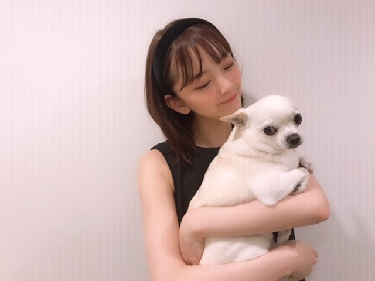

2019/0520Monお気づきかと思いますが夏が好きです
夏が近づくと聖蹟桜ヶ丘に行きたくなりませんか？
私はなります
だいすきなアニメ「耳をすませば」の舞台にもなっていて、一回撮影で行ったのですがあのロータリーも丘も神社も駅前もバスも全部にまったりとした時間が流れていて
頭の中にはずっと耳すまのBGMが流れていました
また行きたいな...
むしろ住みたいな
耳をすませばって夏に観るのももちろん良いけど
冬の場面もあるから冬に観るのも良くて結局一年中、旬なんだなって思いました☺︎
はぁ、青春。
私、"爽やか青春"マニアなんですよ
中学の時から青春を好いて求めすぎる傾向があってですね
河川敷でGReeeeNさんの曲を流しながら親友がカメラを回し私が演じる、自作爽やか青春CMを撮ったりしていました
今思えばただの自己満でしかなくて。たしかにめちゃくちゃ楽しかったしずっと笑ってたけど...
リアル青春をナウでしてる人達から見たら滑稽だったのかな...
休み時間に、友達(女子だけど肩車がめちゃくちゃ得意らしい)が私を肩車して校庭を練り歩いたり
他クラスを巻き込んでバイオハザードごっこをしたり
芸人さんのネタの完コピに励んだり
今思えば
自分達自ら、全然爽やか青春とは程遠い道を歩んでいたのだな...と
まあ、友達と笑った時間が宝物なのでいいんだけどね
う〜ん
もっと青春しておけばよかったぁ〜と
青春おばけになりそう〜あ〜〜ア
今、望みがあるとすればCMやドラマ...なので...
きっとかなり入り込んで熱演できるはず...
が、がんばろ...

さ、前回から始まった夏シリーズの余談？はさておき
黒髪にしました〜✨✨
若干茶色も残しつつこんなに暗い髪色は久しぶりです

髪伸びたなぁ
ミディアムボブ

そして、くすみブルーの服ばかり集めがち
今日は、愛する我が家の天使くんこと、ニコルの誕生日！
8歳！誕生日そめでとう✨(the3名様ネタ)
#ニコル生誕祭


弟のプティにも何だかんだ優しくていつもお兄ちゃんやってくれてありがとう☺︎
プティに嫉妬して最近は自分から甘えに来てくれるのが可愛すぎるし、ニコルが大好きなのは家族みんなずっとずっと変わらないよ
優しくて家族の誰かが落ち込んでたり風邪をひいてると、そっと近くに来て心配そうに顔を見てきたり寄り添ってくれるところも、犬の匂いが全くしなくてむしろいつもフローラルな香りがするところも、公園が大好きではしゃぎ回るところも全部だいすき♡
「生き物にサンキュー」で初めて地上波デビューしてVTRも作っていただいて、家族でよくニコルを囲んで見返しています。笑
長生きしてね
堀家に来てくれてありがとう！
今日は19時からネプリーグ です☺︎
もっと勉強してまた参戦できますように♪
では
2019/05/20 09:24
コメント(357)
僕にはこの日から乃木坂46のファンになったと言える日があります。2016年8月8日です！
乃木坂46のファンになって、青春時代のように夢中になれた、というよりその日からが青春時代とさえ思っています
青春時代なので僕もよくバイオハザードごっこをします！今月だけでも3回はしてますね！
堀さんよりずっと年上の僕ではあるんですけど、こんな感じです(笑)
お気づきかと思いますがここまで僕の個人的な話しかしていません。
なのでここからは伝えなければならないことをわかりやすく(笑)
ミディアムボブの堀さんかわいいです！とくに横顔がかわいいですね
そして、ニコルですね！誕生日おめでとうございます
乃木坂46のファンになって、青春時代のように夢中になれた、というよりその日からが青春時代とさえ思っています
青春時代なので僕もよくバイオハザードごっこをします！今月だけでも3回はしてますね！
堀さんよりずっと年上の僕ではあるんですけど、こんな感じです(笑)
お気づきかと思いますがここまで僕の個人的な話しかしていません。
なのでここからは伝えなければならないことをわかりやすく(笑)
ミディアムボブの堀さんかわいいです！とくに横顔がかわいいですね
そして、ニコルですね！誕生日おめでとうございます
黒っぽい髪色もいいね 似合ってる！
聖蹟桜ヶ丘は大学時代の最寄駅でした！
ジブリを見たことがないので、今度見てみます！
聖蹟桜ヶ丘は大学時代の最寄駅でした！
ジブリを見たことがないので、今度見てみます！
ニコルになりたい・・・
堀ちゃんかわいい。
好きー！
好きー！
堀さん、こんにちは。
僕はつい先日、京王線に乗って新宿まで行きました。車中でふと顔を上げて窓から外を見れば、どことなく『耳をすませば』の世界感そのままの風景が見られて幸せな気分に。街を彩る樹々も緑に染まって、もうすっかり初夏ですね。
堀さんの髪色、黒く落ち着いた色になりました。これから陽射しも強くなりますし、かえって黒髪の方がしっくりくるかもしれません。一方で愛犬ニコルくんはすっかり白毛ですね。
昨夜は『ネプリーグ』お疲れさまでした。ラストの常識クイズ%当ては外れるときは豪快に外れるのが特徴（笑）。番組にまた乃木坂46が出られるといいなあ。
ではまたコメントします。
さらばだ、また会おう！（気球に乗って去りぬ〜）
僕はつい先日、京王線に乗って新宿まで行きました。車中でふと顔を上げて窓から外を見れば、どことなく『耳をすませば』の世界感そのままの風景が見られて幸せな気分に。街を彩る樹々も緑に染まって、もうすっかり初夏ですね。
堀さんの髪色、黒く落ち着いた色になりました。これから陽射しも強くなりますし、かえって黒髪の方がしっくりくるかもしれません。一方で愛犬ニコルくんはすっかり白毛ですね。
昨夜は『ネプリーグ』お疲れさまでした。ラストの常識クイズ%当ては外れるときは豪快に外れるのが特徴（笑）。番組にまた乃木坂46が出られるといいなあ。
ではまたコメントします。
さらばだ、また会おう！（気球に乗って去りぬ〜）
未央奈ちゃんブログありがとう♪
昨日のネプリーグ見たよ～
頑張ってたね！未央奈ちゃん可愛かったよ～♡
録画もしました
髪色いいね～♫
前とちょっとだけ雰囲気変わった気がする♪
これまでの未央奈ちゃんの髪色は、ハニーミルクベージュが一番好きです！
またハニーミルクベージュにしてほしいな♪
ニコルくん、Happy Birthday!!
ニコルくんの優しい性格、未央奈ちゃんにそっくりだね。
ニコルくん、長生きしてね(^-^)
今日は雨がすごかったね…
未央奈ちゃん、風邪とかひいてないかな？
ライブも近くて忙しいと思うけど、体調にだけは気をつけてね
未央奈ちゃんは雨好き？
昨日のネプリーグ見たよ～
頑張ってたね！未央奈ちゃん可愛かったよ～♡
録画もしました
髪色いいね～♫
前とちょっとだけ雰囲気変わった気がする♪
これまでの未央奈ちゃんの髪色は、ハニーミルクベージュが一番好きです！
またハニーミルクベージュにしてほしいな♪
ニコルくん、Happy Birthday!!
ニコルくんの優しい性格、未央奈ちゃんにそっくりだね。
ニコルくん、長生きしてね(^-^)
今日は雨がすごかったね…
未央奈ちゃん、風邪とかひいてないかな？
ライブも近くて忙しいと思うけど、体調にだけは気をつけてね
未央奈ちゃんは雨好き？
こんばんは
ネプリーグ楽しかったですよー！
最後の問題は難しかったですねー！！
新しい制服姿も可愛いらしかったです♡
リボンも可愛いかったけど何より、、
未央ちゃんが沢山見られて嬉しかった☆
またトマトジュース飲んで頑張ってね♪
夏のトマトは美味しいですよ～☺
ネプリーグ楽しかったですよー！
最後の問題は難しかったですねー！！
新しい制服姿も可愛いらしかったです♡
リボンも可愛いかったけど何より、、
未央ちゃんが沢山見られて嬉しかった☆
またトマトジュース飲んで頑張ってね♪
夏のトマトは美味しいですよ～☺
自分も爽やか青春大好きです！
もともとあんまり見ていなかったアニメや恋愛系の映画を見ていてよく憧れる始末です、、、
たった一度の人生、自分ももっと青春しておけばよかったなとつくづく思います。
訳あって今大事な高校２年生を青春できない環境においてしまったので来年全力で青春します！
堀さんずっと応援してます！！
もともとあんまり見ていなかったアニメや恋愛系の映画を見ていてよく憧れる始末です、、、
たった一度の人生、自分ももっと青春しておけばよかったなとつくづく思います。
訳あって今大事な高校２年生を青春できない環境においてしまったので来年全力で青春します！
堀さんずっと応援してます！！
みおな、こんばんは。
まだまだ、青春まっただ中ではないですか。20代なんて、まだ何でもできる年頃ですよ。
僕も10代の頃は、何も出来ないで燻っていたけど、就職して少し余裕が出来たら、色々なことに挑戦したよ。それが今ではいい思い出になっている。
今からでも遅くは無い。ちょっと無理かなと思うことに挑戦しましょう。
まだまだ、青春まっただ中ではないですか。20代なんて、まだ何でもできる年頃ですよ。
僕も10代の頃は、何も出来ないで燻っていたけど、就職して少し余裕が出来たら、色々なことに挑戦したよ。それが今ではいい思い出になっている。
今からでも遅くは無い。ちょっと無理かなと思うことに挑戦しましょう。
ネプリーグ、観ましたよー！
最後のパーセントバルーン、自分もリビングにいる時間が長い女子高生は半分以下だと思ったので、意外でした。
難しかったですね☆
最後のパーセントバルーン、自分もリビングにいる時間が長い女子高生は半分以下だと思ったので、意外でした。
難しかったですね☆
乃木中の未央奈ちゃんの絵まじで草
かわいい目もだし
ラフな素が時々見えるところ、
ふとした表情で人を癒せる所が
類友というかご主人似だと思います✨
だからこれからもずっとずっと長生き
願ってます！
ニコル先輩、お誕生日おめでとうございました✨
ラフな素が時々見えるところ、
ふとした表情で人を癒せる所が
類友というかご主人似だと思います✨
だからこれからもずっとずっと長生き
願ってます！
ニコル先輩、お誕生日おめでとうございました✨
ブログ更新ありがとう！
ニコル誕生日おめでとう！
ネプリーグの参戦待ってます。
ニコル誕生日おめでとう！
ネプリーグの参戦待ってます。
未央ちゃんこんばんは！
髪色変えたのね！似合うよ(^^)
夏になるとコンクリーロードだよねええ！共感
ネプリーグお疲れ様！
未央ちゃんの出される問題だけ他の子に比べて難しかった気がするのは私だけでしょうか？笑(贔屓目とか無しで)
LANもバスコダもダージも、他のに比べると難しく感じたな(というか私もわかんなかった^^;)
最後の女子高生リビングも、私20%と予想したけどそれでも多いかな？くらいの気持ちだった！
楽しく和やかな1時間でした！ありがとう☺︎
またクイズ番組出られるといいね！
それではおやすみおな〜
髪色変えたのね！似合うよ(^^)
夏になるとコンクリーロードだよねええ！共感
ネプリーグお疲れ様！
未央ちゃんの出される問題だけ他の子に比べて難しかった気がするのは私だけでしょうか？笑(贔屓目とか無しで)
LANもバスコダもダージも、他のに比べると難しく感じたな(というか私もわかんなかった^^;)
最後の女子高生リビングも、私20%と予想したけどそれでも多いかな？くらいの気持ちだった！
楽しく和やかな1時間でした！ありがとう☺︎
またクイズ番組出られるといいね！
それではおやすみおな〜
勉強教えてほしい！！
そしたら、絶対点数がとれる！！
そしたら、絶対点数がとれる！！
堀ちゃんこんばんは！
堀ちゃんの青春への想いとエピソード、とても興味深いです(o^^o)
僕も爽やか青春というよりは、ひたらすら部活で男しかいない中で野球をする、暑苦しめの青春を過ごしました( ´ ▽ ` )笑
当時は青春してるとは思ってなかったですが、今思えばあれも楽しい青春だったかなぁとも思うので、割と青春に悔いなし派です(^^)
でも、堀ちゃんの言う「爽やか青春」も体験したかったかなぁ( ´ ▽ ` )笑
ちょっと話は変わりますが、爽やか青春マニアの堀ちゃんにShout it Outさんの「青春のすべて」という曲をオススメしたいです(o^^o)
青春が楽しかった人、青春したかった人にビビッとくると思いますし、昔の記憶や今の自分とも照らし合わされて、個人的に胸が熱くなってとても好きな曲です！
「忘れたくないけど 置いていかれたくもないし」
という歌詞に、一瞬の青春の眩しさやら切なさやらを今でも感じさせられます( ´ ー ` )
青春と音楽って絶妙に合いますよね、良かったら聴いてみてください(o^^o)♩
青春CMでの堀ちゃんもめっちゃ見たい！絶対似合う！
色んなアンケートにたくさん書いておきます！笑
そしてネプリーグ見ましたー！
最初のコーナーは堀ちゃんがたくさん見られて嬉しかったですー！
正解不正解は僕たちにとって二の次です！(o^^o)笑
友達とLINEしながら見てて、バルーンのところでは「21%！いいとこ！」「ぴったりやない！？」と話していました( ´ ▽ ` )笑
しかしあの問題は難しかったですね〜、イメージ的にはやっぱり少ないと思っちゃいますもん( ´ 〜 ` )
とにかく楽しい1時間でした、ありがとうございます(o^^o)♩
今日は東京で相当雨が強かったと聞きましたが大丈夫だったでしょうか？濡れてないでしょうか？
梅雨も間近で、雨も多くて湿度も高いと疲れやすくもなるので、お忙しいと思いますが、可能なときはゆっくり休めてください(^^)
そしてその後の夏を目一杯楽しみましょー！( ´ ▽ ` )
ではではでは！またコメントさせてくださいー！
堀ちゃんの青春への想いとエピソード、とても興味深いです(o^^o)
僕も爽やか青春というよりは、ひたらすら部活で男しかいない中で野球をする、暑苦しめの青春を過ごしました( ´ ▽ ` )笑
当時は青春してるとは思ってなかったですが、今思えばあれも楽しい青春だったかなぁとも思うので、割と青春に悔いなし派です(^^)
でも、堀ちゃんの言う「爽やか青春」も体験したかったかなぁ( ´ ▽ ` )笑
ちょっと話は変わりますが、爽やか青春マニアの堀ちゃんにShout it Outさんの「青春のすべて」という曲をオススメしたいです(o^^o)
青春が楽しかった人、青春したかった人にビビッとくると思いますし、昔の記憶や今の自分とも照らし合わされて、個人的に胸が熱くなってとても好きな曲です！
「忘れたくないけど 置いていかれたくもないし」
という歌詞に、一瞬の青春の眩しさやら切なさやらを今でも感じさせられます( ´ ー ` )
青春と音楽って絶妙に合いますよね、良かったら聴いてみてください(o^^o)♩
青春CMでの堀ちゃんもめっちゃ見たい！絶対似合う！
色んなアンケートにたくさん書いておきます！笑
そしてネプリーグ見ましたー！
最初のコーナーは堀ちゃんがたくさん見られて嬉しかったですー！
正解不正解は僕たちにとって二の次です！(o^^o)笑
友達とLINEしながら見てて、バルーンのところでは「21%！いいとこ！」「ぴったりやない！？」と話していました( ´ ▽ ` )笑
しかしあの問題は難しかったですね〜、イメージ的にはやっぱり少ないと思っちゃいますもん( ´ 〜 ` )
とにかく楽しい1時間でした、ありがとうございます(o^^o)♩
今日は東京で相当雨が強かったと聞きましたが大丈夫だったでしょうか？濡れてないでしょうか？
梅雨も間近で、雨も多くて湿度も高いと疲れやすくもなるので、お忙しいと思いますが、可能なときはゆっくり休めてください(^^)
そしてその後の夏を目一杯楽しみましょー！( ´ ▽ ` )
ではではでは！またコメントさせてくださいー！
堀さん、こんばんは。
乙女神楽のshowroom見ました。
アテレコ面白くて、怒涛の読み間違いボケはナイツさんの漫才を彷彿とさせました。なんか服やメイクが大人っぽくて、この人綺麗だな～って口開けながら見てました。
余談ですが、フリージアって聞くと僕は毎回、赤いフリージアが頭に流れます。今も自分で書いた文字見て頭に流れてます。
イニシエーションラブ見たんですね。堀さんは気に入ったのを何度も見るんですね。
僕は先日、劇場でも見た「若おかみは小学生」「最初で最後のキス」をレンタルで見直してたんですけど、二度目の方が凄く泣けて、どう着地するか分からない１度目の鑑賞と、宿命に向かっていく２度目以降の鑑賞って全然違うんだなって考えてました。
そういえばブログの最後の写真のニコル君が温泉でも入ってるみたいで、何度見ても笑ってしまいます。堀さんもリラックスする時間を大事にしてくださいね。
乙女神楽のshowroom見ました。
アテレコ面白くて、怒涛の読み間違いボケはナイツさんの漫才を彷彿とさせました。なんか服やメイクが大人っぽくて、この人綺麗だな～って口開けながら見てました。
余談ですが、フリージアって聞くと僕は毎回、赤いフリージアが頭に流れます。今も自分で書いた文字見て頭に流れてます。
イニシエーションラブ見たんですね。堀さんは気に入ったのを何度も見るんですね。
僕は先日、劇場でも見た「若おかみは小学生」「最初で最後のキス」をレンタルで見直してたんですけど、二度目の方が凄く泣けて、どう着地するか分からない１度目の鑑賞と、宿命に向かっていく２度目以降の鑑賞って全然違うんだなって考えてました。
そういえばブログの最後の写真のニコル君が温泉でも入ってるみたいで、何度見ても笑ってしまいます。堀さんもリラックスする時間を大事にしてくださいね。
ニコル羨ましいなぁ
玄米茶です⊂(ο･㉨･ο）⊃”くまﾃﾞｽ…
公園いいよね～(o≧▽ﾟ)oニパッ♡
SHOWROOM♡観ました。ザンビ♡のゲーム面白かったでふ(笑)(ó㉨ò)ﾉ♡ 渡辺殿×堀殿×れんちゃまのウキウキとまらんぜ台詞♡ほのぼのトークありがとうございますd(・(ェ)・d)☆very good☆(b・(ェ)・)b
公園いいよね～(o≧▽ﾟ)oニパッ♡
SHOWROOM♡観ました。ザンビ♡のゲーム面白かったでふ(笑)(ó㉨ò)ﾉ♡ 渡辺殿×堀殿×れんちゃまのウキウキとまらんぜ台詞♡ほのぼのトークありがとうございますd(・(ェ)・d)☆very good☆(b・(ェ)・)b
未央奈 おはよう！
遅くなってしまったけど、
ニコル君 誕生日おめでとう
カワイイ！
聖蹟桜ヶ丘！
嬉しい、嬉しい。
奥多摩も。
青春おばけ ねー。
社会人になるとね、
なんだろうね、
この感覚。
ネプリーグ 見たよ！
未央奈らしさ出てたよ！
ザンビ配信も、
未央奈の笑顔 最高でした。
一人でも多く伝わってたら嬉しいな。
未央奈は未央奈のままで！
最高の笑顔を！
遅くなってしまったけど、
ニコル君 誕生日おめでとう
カワイイ！
聖蹟桜ヶ丘！
嬉しい、嬉しい。
奥多摩も。
青春おばけ ねー。
社会人になるとね、
なんだろうね、
この感覚。
ネプリーグ 見たよ！
未央奈らしさ出てたよ！
ザンビ配信も、
未央奈の笑顔 最高でした。
一人でも多く伝わってたら嬉しいな。
未央奈は未央奈のままで！
最高の笑顔を！
言葉足らずでごめんね。
でも、やっぱりかわいい(>_<)
かわいいもんはかわいいのです。
でも、やっぱりかわいい(>_<)
かわいいもんはかわいいのです。
握手会にニコルもって、やっぱし無理か・・・
みおなちゃん、こんにちは。
SHOWROOM配信、僕は見たよ。めっちゃ楽しかったです。
ザンビのゲーム、乙女神楽めっちゃ楽しそうでしたね。みおなちゃん、めっちゃかわいかったよ。
セリフ読みでは、みり愛ちゃん、イケメンボイスでしたね～。
みおなちゃん、体調に気をつけて仕事頑張ってね。
またコメントするね。
SHOWROOM配信、僕は見たよ。めっちゃ楽しかったです。
ザンビのゲーム、乙女神楽めっちゃ楽しそうでしたね。みおなちゃん、めっちゃかわいかったよ。
セリフ読みでは、みり愛ちゃん、イケメンボイスでしたね～。
みおなちゃん、体調に気をつけて仕事頑張ってね。
またコメントするね。
未央ワンお疲れ様です。showRoomサンビのゲームのやつ見たよ‼️未央ワン中心に３人とも可愛いくて、凄く癒されたよ‼️また、３人で何かやってほしいなあ‼️私は未央ワンの色んな髪型してますが、ボブが一番好き 今日のレコメンも楽しみ いつもは、仕事中でリアルタイムで聞けないけど、今日は休みなのでリアルタイムで楽しみます。読んでもらえないと思うけど、レコメン宛にメール送るね‼️大好きやおー
そういう友達との絡みこそ青春だと思うけどなぁ
僕も夏好きです。
今度、愛知でやる全国握手会行くので、楽しみにしていてください！
今度、愛知でやる全国握手会行くので、楽しみにしていてください！
レコメン！宜しく。
暫くは会えないけど仕方ないかあ。小説を書こうと思って今勉強してる。力つけて独立して稼がないと。
暫くは会えないけど仕方ないかあ。小説を書こうと思って今勉強してる。力つけて独立して稼がないと。
こんばんは
ザンビゲーム配信も楽しかったですよー☆
私服姿もポニテも可愛いらしかったです！
ハートのイヤリングも似合ってましたよ♡
未央ちゃん達の動きも面白かったし、、
あんちゃんとれんたんも仲良しでした♪笑
レコメン！もとっても楽しみですよ～☺
ザンビゲーム配信も楽しかったですよー☆
私服姿もポニテも可愛いらしかったです！
ハートのイヤリングも似合ってましたよ♡
未央ちゃん達の動きも面白かったし、、
あんちゃんとれんたんも仲良しでした♪笑
レコメン！もとっても楽しみですよ～☺
僕は未央奈さんが大好き！
個人的には黒髪大好きです。なんかホッとするっていうか黒髪の女性といると落ち着きます。ただ以前未央奈が金髪ギャルのコスプレをしたとき、衝撃的に可愛くて凝り固まっていた自分のファッション感を反省させられた思い出があります。無理なく変化を楽しんでいる未央奈に刺激を受けて、僕も最近ちょっぴり‥ほんのちょっぴりお洒落になってきた気がします。未央奈先生これからもよろしくお願いしますです。
中間テストやらでコメントするの遅れました…
テストやです。勉強嫌いです。でも未央奈さんは好きです。
学校の先生が未央奈さんだったら
学年トップ取り続けるのになぁ…
ブログ最近頻繁に更新してくれて本当に嬉しいです！
お忙しいのにありがとうございます。
テスト期間の唯一の癒しです。
相変わらずお綺麗で、お可愛いですね。大好きです。
私も夏は大好きです！めっちゃ汗かきながら部活をするのが
すごい好きです。ちなみにフットサル部です。
もうすぐライブがありますね。
私は見事に選抜ライブだけ外れましたけど、
心の中では誰よりも熱く未央奈さんを応援してます。
お身体にはお気をつけて楽しんでくださいね♪
あと2日間、テスト頑張りますっ！
ご褒美に握手会があるんです！
未央奈さんに会える！やったぁ！
テストやです。勉強嫌いです。でも未央奈さんは好きです。
学校の先生が未央奈さんだったら
学年トップ取り続けるのになぁ…
ブログ最近頻繁に更新してくれて本当に嬉しいです！
お忙しいのにありがとうございます。
テスト期間の唯一の癒しです。
相変わらずお綺麗で、お可愛いですね。大好きです。
私も夏は大好きです！めっちゃ汗かきながら部活をするのが
すごい好きです。ちなみにフットサル部です。
もうすぐライブがありますね。
私は見事に選抜ライブだけ外れましたけど、
心の中では誰よりも熱く未央奈さんを応援してます。
お身体にはお気をつけて楽しんでくださいね♪
あと2日間、テスト頑張りますっ！
ご褒美に握手会があるんです！
未央奈さんに会える！やったぁ！
僕も夏が好き！
未央ワンおはよー☀️ ゆっかと茜んがのりさんに高級ヒレステーキを二人で1.2キロご馳走になったそうだよ‼️これは未央ワンとかとしちゃんもご馳走して貰わないとね‼️何をご馳走して貰う？誰と一緒にご馳走して貰う？沢山食べて、栄養蓄えて忙しい日々を元気に乗り越えてね‼️今日も１日未央ワンや乃木坂メンバー、メンバーの家族、ファンの方々、スタッフさん、乃木坂を卒業した方々、バナナマンさん、イジリーさん、オテンキのりさん、オリラジさんなど未央ワンとの共演者の方々、未央ワンの友人の方々が元気で幸せに過ごせますように 未央ワン大好きやおー
未央奈ちゃん、ひろっしーです！コメント投稿586回目です！
前回はブログ「トマトの力を信じます」にブログの感想を書きました！
時間→「No.279 2019年5月20日 00:55」
2日連続ブログ更新ありがとうございます！
夏、やっぱり好きなんですね(笑) 夏未央奈(笑)
中学生かぁ・・・10年ぐらい前ですね！
僕ももっと青春しておけば良かったです！
もちろん友達と遊んだりはしていたのですが、乃木坂がまだ結成されていない2010年の春、その頃からずっと嵐にドハマりしているので、僕の青春は嵐です！って事は今も青春？(笑)
※嵐にドハマりしたのは中学生ですが、好きになったのは小学生の高学年からです！
「友達と笑った時間が宝物」って素晴らしい！
その友達が見ていたら嬉しいと思いますよ！
CMやドラマで青春出来ると良いね！
黒髪似合ってる～！確かに、結構髪伸びたね！
でも、その長さも似合ってるよ！
はぁ、何でも似合うって羨ましいな～！
遅れたけど、ニコルくん誕生日おめでとう！
えっ、もう8歳かぁ！いやぁ、早いですな～！
未央奈ちゃんはニコルくんが大好きなんだね！
凄く伝わってきました！長生きして欲しいね！
「ネプリーグ」観ました！
序盤から間違っちゃったけど、林先生の「次はないよ」は少し厳しすぎだと思います！
「LAN」は特に難しかったな～！
「Local Area Network」勉強になりました！
「なーんだ？」めっちゃ可愛かったです！
最後もバルーン割りまくりましたね！多すぎてむしろ割れている音が気持ち良かったです(謝)
また参戦出来るように勉強ですな！ファイト！
今週も「レコメン！」、本当に毎週お疲れ様！
元気そうで何よりですが、体調管理ガンバ～！
ここまで読んで頂きありがとうございました！
毎日お仕事お疲れ様です！体調にはくれぐれも気を付けて頑張ってくださいね！
ではでは！
前回はブログ「トマトの力を信じます」にブログの感想を書きました！
時間→「No.279 2019年5月20日 00:55」
2日連続ブログ更新ありがとうございます！
夏、やっぱり好きなんですね(笑) 夏未央奈(笑)
中学生かぁ・・・10年ぐらい前ですね！
僕ももっと青春しておけば良かったです！
もちろん友達と遊んだりはしていたのですが、乃木坂がまだ結成されていない2010年の春、その頃からずっと嵐にドハマりしているので、僕の青春は嵐です！って事は今も青春？(笑)
※嵐にドハマりしたのは中学生ですが、好きになったのは小学生の高学年からです！
「友達と笑った時間が宝物」って素晴らしい！
その友達が見ていたら嬉しいと思いますよ！
CMやドラマで青春出来ると良いね！
黒髪似合ってる～！確かに、結構髪伸びたね！
でも、その長さも似合ってるよ！
はぁ、何でも似合うって羨ましいな～！
遅れたけど、ニコルくん誕生日おめでとう！
えっ、もう8歳かぁ！いやぁ、早いですな～！
未央奈ちゃんはニコルくんが大好きなんだね！
凄く伝わってきました！長生きして欲しいね！
「ネプリーグ」観ました！
序盤から間違っちゃったけど、林先生の「次はないよ」は少し厳しすぎだと思います！
「LAN」は特に難しかったな～！
「Local Area Network」勉強になりました！
「なーんだ？」めっちゃ可愛かったです！
最後もバルーン割りまくりましたね！多すぎてむしろ割れている音が気持ち良かったです(謝)
また参戦出来るように勉強ですな！ファイト！
今週も「レコメン！」、本当に毎週お疲れ様！
元気そうで何よりですが、体調管理ガンバ～！
ここまで読んで頂きありがとうございました！
毎日お仕事お疲れ様です！体調にはくれぐれも気を付けて頑張ってくださいね！
ではでは！
聖蹟地元だわ！！
いつでもおいで！！！
いつでもおいで！！！
ネプリーグ見ました、そしてレコメンも聴きました。
そのレコメン内で「タージマハル」をインドの城とおっしゃってましたが、あれはお墓ですよ。お城と言われたら、そりゃのりさんも答えられませんって(笑)
ネプリーグの問題でもお墓と言われていたのに、どこでお城に変換されたのか、流石です！！
そのレコメン内で「タージマハル」をインドの城とおっしゃってましたが、あれはお墓ですよ。お城と言われたら、そりゃのりさんも答えられませんって(笑)
ネプリーグの問題でもお墓と言われていたのに、どこでお城に変換されたのか、流石です！！
みおちゃん、それ爽やか青春やで！
こんにちは
レコメン！とっても面白かったですよー！
淡いブルーの私服姿とっても爽やかです♪
暗くした髪色もとってもツヤツヤですね♡
のりさんフォトブック表紙写真も素敵です！
時計での小ボケとっても素晴らしいです～笑
草って書くと品がないですよねW～☺
レコメン！とっても面白かったですよー！
淡いブルーの私服姿とっても爽やかです♪
暗くした髪色もとってもツヤツヤですね♡
のりさんフォトブック表紙写真も素敵です！
時計での小ボケとっても素晴らしいです～笑
草って書くと品がないですよねW～☺
聖蹟桜ヶ丘！！嬉しい♡
ぜひ住んでね！(*´艸`)
ぜひ住んでね！(*´艸`)
Ｈａｙおに未央奈(･∀･∩)。わら
ジブリはトトロ一筋だから、ボクは。笑
ジブリショップのどんぐり共和国に行きたいなー後は..未央奈が天ぷらが好きみたいだから、天ぷら屋に独りで行きたい
青春おばけ怖い..ペレス神父に除霊を頼まなきゃ。笑
..とまぁ死霊館のdvdを借りた伏線なんすけどね。笑
明後日は“ダサ子“リブート版を映画館で観てこようかとヒェ(..;)
ニコル8歳の誕生日おめでとう＼(^o^)／
がんばみおな
ジブリはトトロ一筋だから、ボクは。笑
ジブリショップのどんぐり共和国に行きたいなー後は..未央奈が天ぷらが好きみたいだから、天ぷら屋に独りで行きたい
青春おばけ怖い..ペレス神父に除霊を頼まなきゃ。笑
..とまぁ死霊館のdvdを借りた伏線なんすけどね。笑
明後日は“ダサ子“リブート版を映画館で観てこようかとヒェ(..;)
ニコル8歳の誕生日おめでとう＼(^o^)／
がんばみおな
昨日のザンビショールームの、草についての堀ちゃんのコメントが「草に対して失礼」って！笑
その後のレコメンでも言ってたね～！！
暑いから体調には気をつけてね。
その後のレコメンでも言ってたね～！！
暑いから体調には気をつけてね。
髪、少し黒に染め戻したんだね、少し茶色を
入れたままで！
聖蹟桜ヶ丘って耳をすませばの舞台になってるんだ、始めて知った！
まず聖蹟桜ヶ丘って東京にあるの？。名前から
して世田谷区にありそうな名前？
青春は学生時代にしか経験出来ない思い出だよね
俺は、青春というより普通に学生の頃は過ごしてた笑
入れたままで！
聖蹟桜ヶ丘って耳をすませばの舞台になってるんだ、始めて知った！
まず聖蹟桜ヶ丘って東京にあるの？。名前から
して世田谷区にありそうな名前？
青春は学生時代にしか経験出来ない思い出だよね
俺は、青春というより普通に学生の頃は過ごしてた笑
いつも応援しま〜す頑張ってください！
堀さん、こんばんは♪
未央奈ちゃん と呼ぶより 堀さん
の方が言いやすいです。
堀さんは休み時間に肩車に乗ってたのですね。
僕の学校では女子生徒が女子生徒のひざの上に
座ってました。
僕も座りたかったのですが、「座らして下さい」
と言えませんでした。
堀さんの犬は８歳なのですね。
僕の家の猫も８歳です。
ネプリーグを見ました。
堀さんが二人で言葉を完成させる問題で
言葉の後半部分を書いていました。
堀さん、かわいかったです☆
ではまたコメントしますね☆
未央奈ちゃん と呼ぶより 堀さん
の方が言いやすいです。
堀さんは休み時間に肩車に乗ってたのですね。
僕の学校では女子生徒が女子生徒のひざの上に
座ってました。
僕も座りたかったのですが、「座らして下さい」
と言えませんでした。
堀さんの犬は８歳なのですね。
僕の家の猫も８歳です。
ネプリーグを見ました。
堀さんが二人で言葉を完成させる問題で
言葉の後半部分を書いていました。
堀さん、かわいかったです☆
ではまたコメントしますね☆
夏はジブリだよね(・∀・)
沢山見たいのあって迷うよね(笑)
沢山見たいのあって迷うよね(笑)
一生青春ヾ（＾▽＾）ノ
青春は終わらないヾ（＾▽＾）ノ
応援してます！
青春は終わらないヾ（＾▽＾）ノ
応援してます！
みおなちゃん、こんにちは！
私も耳をすませば好きだから、聖蹟桜ヶ丘行ってみたいな〜!
どんなとこなんだろう(*´`)？
新しい髪色かわいい!
似合ってるね(^-^)/
ニコルくんお誕生日おめでとう!
明日からもfight!!
私も耳をすませば好きだから、聖蹟桜ヶ丘行ってみたいな〜!
どんなとこなんだろう(*´`)？
新しい髪色かわいい!
似合ってるね(^-^)/
ニコルくんお誕生日おめでとう!
明日からもfight!!
『耳をすませば』私も大好きです！！
出た！青春おばけ！！笑笑
私は青春という青春を送っているのかはわからないですが、毎日楽しく過ごせれば良いのかなと思います キラキラした青春は私には似合わないから笑笑
キラキラした青春は私には似合わないから笑笑
髪とっても可愛いです！！どうしてこんなに可愛くなるのかが不思議でたまりません！！私が同じ髪型をしたところで未央奈ちゃんには1ミリも追いつけませんね笑笑
可愛すぎて反則です笑笑！！
これからも応援しています！！
＃ニコル生誕祭
出た！青春おばけ！！笑笑
私は青春という青春を送っているのかはわからないですが、毎日楽しく過ごせれば良いのかなと思います
髪とっても可愛いです！！どうしてこんなに可愛くなるのかが不思議でたまりません！！私が同じ髪型をしたところで未央奈ちゃんには1ミリも追いつけませんね笑笑
可愛すぎて反則です笑笑！！
これからも応援しています！！
＃ニコル生誕祭
いい青春ですね(^_^)
ジブリでは、ナウシカが好きです♪
ジブリでは、ナウシカが好きです♪


ネプリーグ、僕は見たよ録画しながら見たよ。みおなちゃん、新制服似合っていて、めっちゃかわいかったよ。
最後のリビングの問い、むずかしかったね。あれはしかたないですよ。みおなちゃんのせいではないですよ。
みおなちゃん、体調に気をつけて仕事頑張ってね。
またコメントするね。